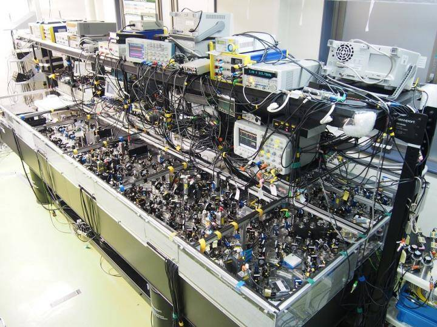
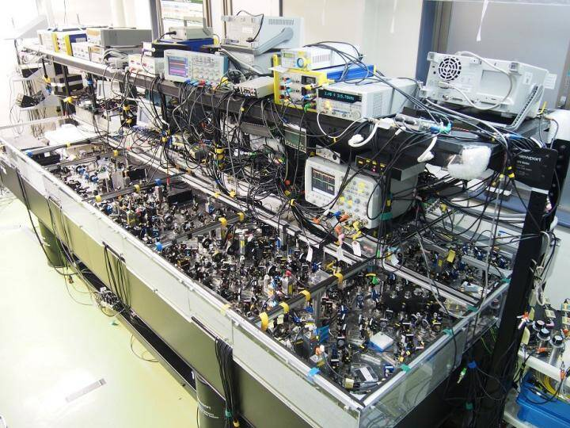
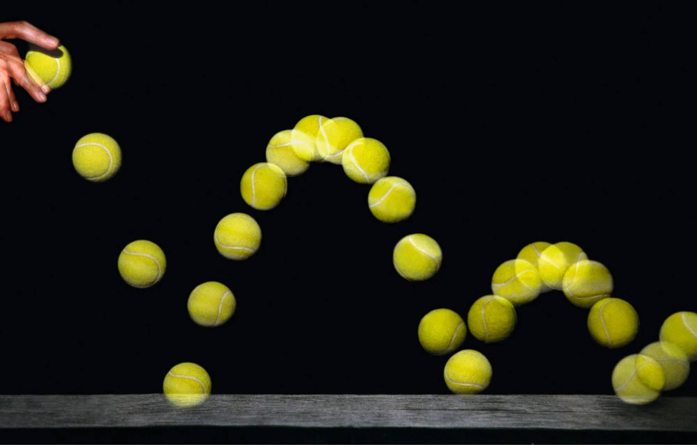
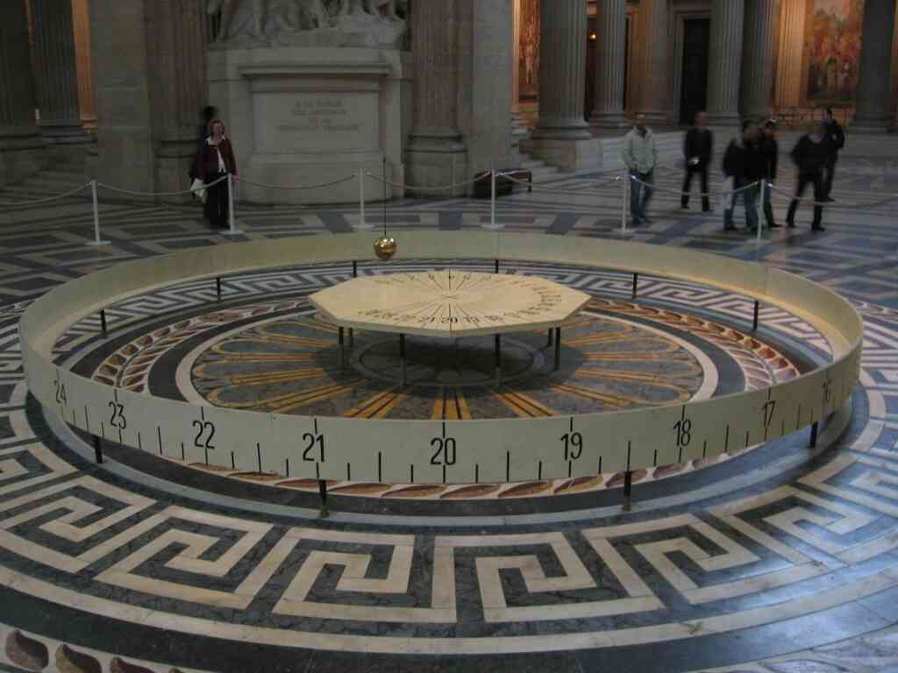
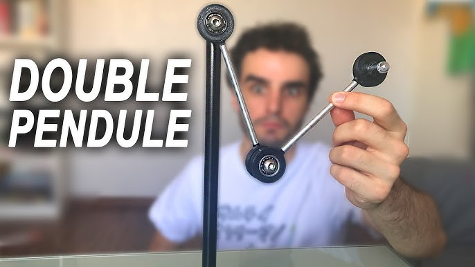
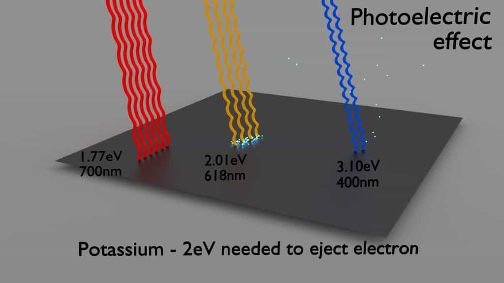
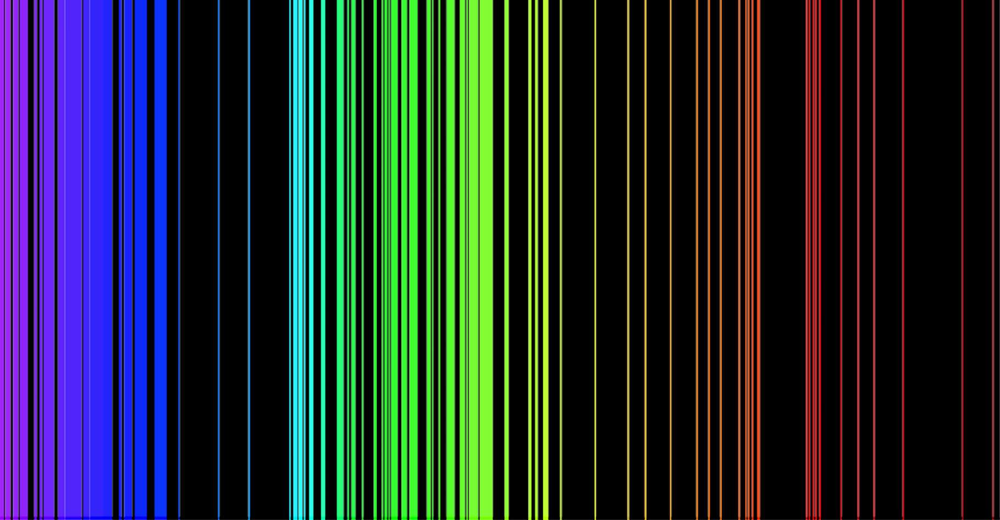
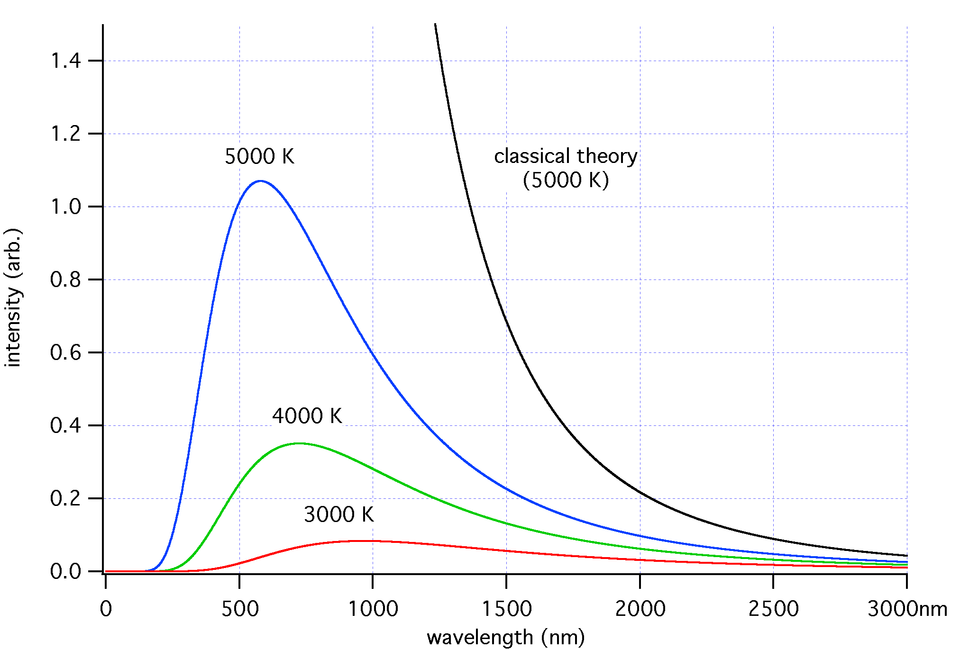

Voyage en Physique Quantique :
L’intrication
Paul Hilaire
27 Mai 2025
Séminaire vulgarisation pour lycéens
Qu'est-ce que c'est ?

 

Physique classique



$m \vec{a} = \frac{d\vec v}{dt} = \sum \vec{F}$
- Déterminisme : si on connaît les conditions initiales, on peut tout prédire.
- Hasard = manque d'information ? Exemple : double pendule.
Le chaos: le "hasard" en physique classique
Pourquoi la physique quantique ?
- XIXe : Physique "presque" complète.
-
Ombres au tableau :
- Effet photoélectrique des électrons sont émis par une plaque métallique seulement si la lumière est au-dessus d’une certaine fréquence, pas en fonction de l’intensité !
- Spectres de raies atomiques les atomes émettent/absorbent uniquement certaines couleurs précises, pas un spectre continu.
-
La physique classique échoue: nouveau cadre
→ la physique quantique.

Effet photoélectrique – Einstein 1905

Spectre de raies d'émission

Corps noir – la loi de Planck remplace Rayleigh-Jeans
Conséquences surprenantes
-
Niveaux d'énergie discrets
Les électrons dans un atome ne peuvent exister que sur des orbites bien définies, pas entre deux. -
La dualité onde-corpuscule
La matière semble avoir un comportement qui emprunte parfois à celui des ondes et parfois à celui des balles. -
Principe d'incertitude
(d'Heisenberg) Impossible de connaître avec précision la position et la vitesse d'une particule. -
La mesure est un acte fondamental
Observer un système quantique modifie son état. C'est ce qu'on appelle la “réduction du paquet d'ondes”. - Superposition quantique
- Intrication quantique

Le chat de Schrödinger, à la fois mort et vivant (superposition quantique)

Des photons (particules de lumière) provenant d'un satellite, intriqués sur plus de 1000 km
Présentation avec pile/face
Un long débat physique et philosohique
1935 – Le paradoxe EPR
1935 – Débat mathématique
1950 – Démonstration d'intrication
1964 – Inégalités de Bell
1980-2022 – Expériences et Nobel


- Albert Einstein débat avec Nils Bohr de la "complétude" de la physique quantique.
- Il n'est pas satisfait de son côté "aléatoire".
- Il défend l'idée d'un modèle à variables cachées.
- John von Neumann "prouve" qu'un modèle à variables cachés est impossible.
- Grete Hermann démontre que cette preuve est fausse...
- Mais personne ne l'écoute...
- Chien-Shiung Wu réalise la première expérience d'intrication de photons.
- Résultat peu reconnu... y compris aujourd’hui.
- John Bell redécouvre l'erreur dans la preuve de von Neumann.
- Il montre qu'une expérience peut trancher entre Einstein et Bohr.
- Ses inégalités rendent l'interprétation testable expérimentalement.
- Expériences de Clauser, Aspect, et Zeilinger.
- Les modèles à variables cachées sont exclus par l’expérience !
- Ils reçoivent le prix Nobel en 2022.
Mon parcours
- Lycée
- En terminale
- Prépa scientifique
- École d’ingénieur
- Thèse en physique quantique expérimentale, puis virage vers la théorie
- Postdoc aux États-Unis
- Passage par l'industrie (Quandela)
- Aujourd’hui : enseignant-chercheur à Télécom Paris
Caricature (un peu vraie) du théoricien

Être chercheur, c’est quoi ?
- Enseigner
- Mon domaine : l'informatique quantique, et plus précisément, la correction d’erreurs quantiques
- En pratique, mon travail se divise en trois grandes activités :
- Me tenir à la page
- « Chercher »
- Diffuser
- Encadrement de la recherche
Pour aller plus loin
-
Excellents livres de vulgarisation scientifique
- Une brève histoire du temps – S. Hawking
- Tout ce que vous avez toujours voulu savoir sur le blob – A. Dussutour
-
Chaînes youtube
Me contacter: paul.hilaire@telecom-paris.fr